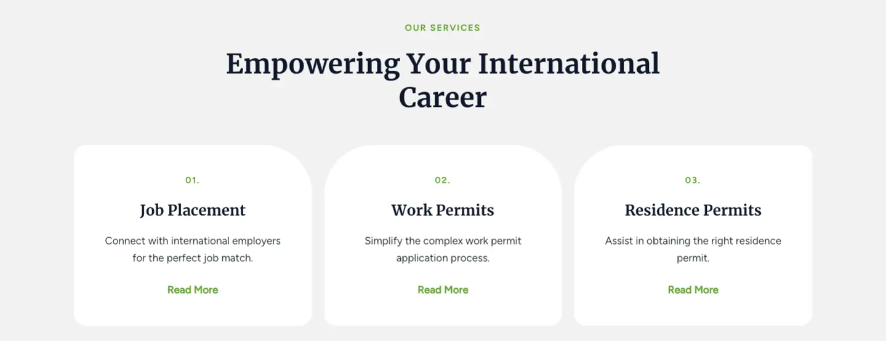
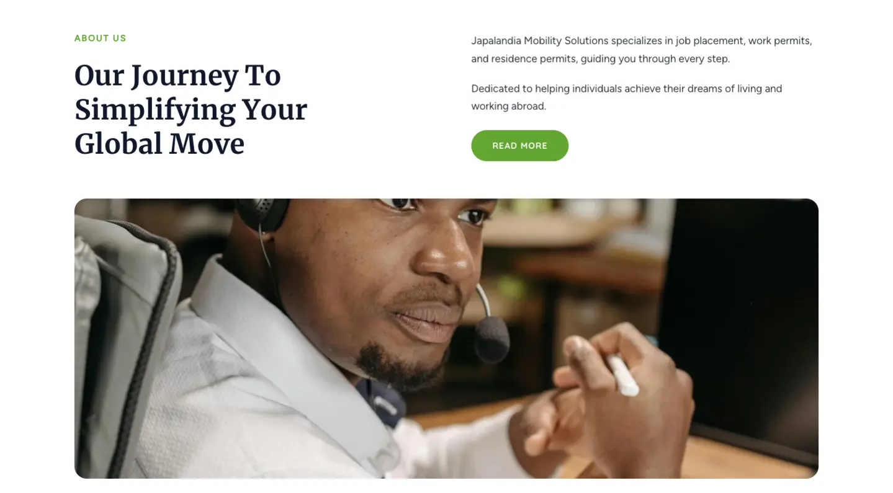
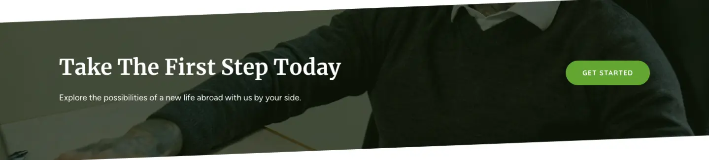
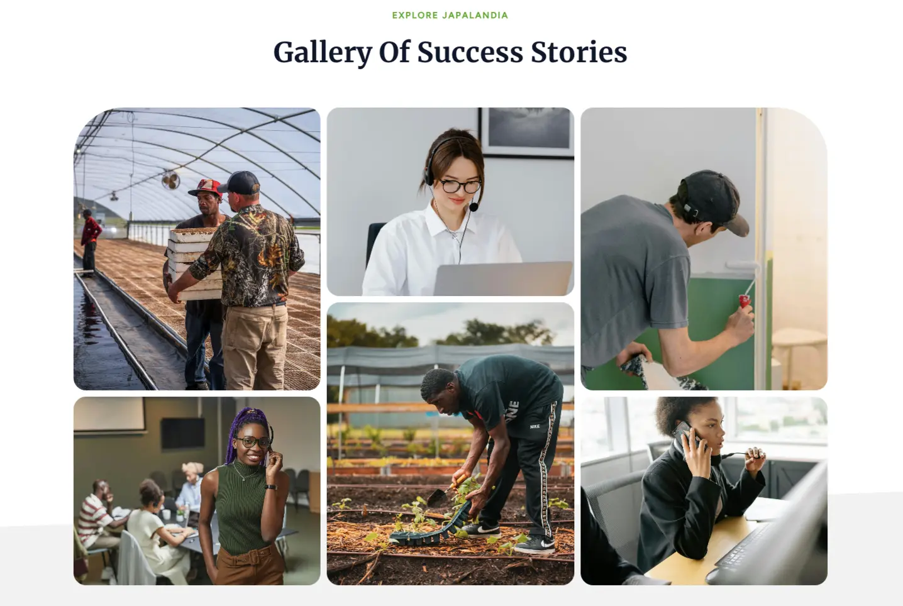
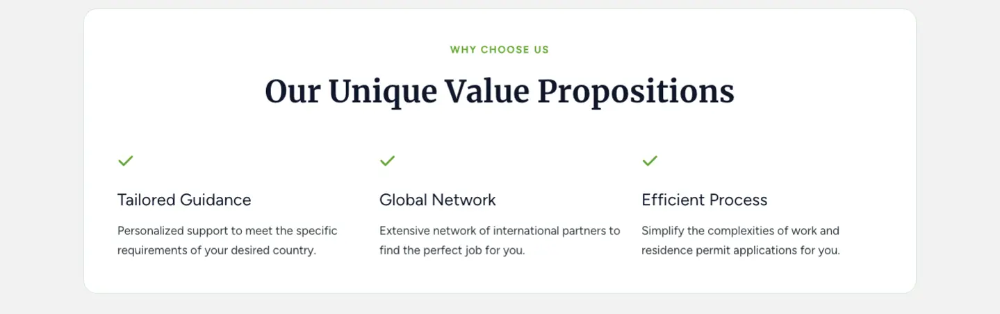
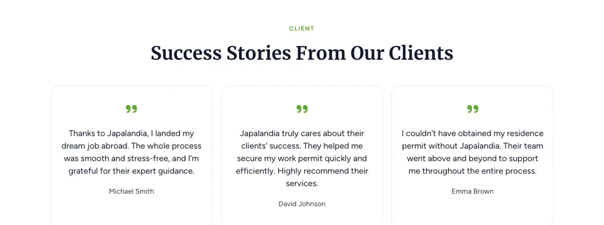
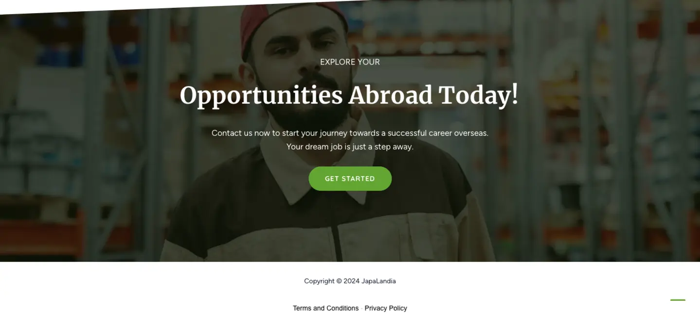

How I Developed the JapaLandia Website: A Complete Guide
Published on August 22, 2024
Designing the JapaLandia landing page was a key project as it served as the first point of interaction for potential clients. My goal as a freelance programmer specializing in WordPress development and landing page design was to create a visually appealing and user-friendly layout that effectively communicates the services offered by JapaLandia. In this guide, I'll walk you through the design and development process, from the initial layout to optimizing for performance and SEO.
Designing the Landing Page
Hero Section
The top of the landing page features a high-quality image that conveys the essence of the services offered by JapaLandia. This image is paired with a bold headline, "Unlock Boundless Opportunities Abroad," which encourages visitors to take immediate action. The Call to Action (CTA) in this section is a prominent "Get Started" button that guides users to initiate the consultation process, making it easy for them to engage with the service. Designed using the Astra theme, this button is crucial for driving conversions right from the start.

Services Section
The landing page highlights the three primary services offered: Job Placement, Work Permits, and Residence Permits. Each service is presented with a concise description and an accompanying CTA button, encouraging visitors to learn more and take the next step. This section was crafted to ensure potential clients immediately understand the value JapaLandia provides.
About Us Section
An "About Us" section provides insights into JapaLandia's mission and values, establishing credibility and fostering trust with potential clients. It's important to do this because studies show that 52% of visitors want to see 'About Us' information when they first visit a company's website (KoMarketing, 2015). A well-crafted introduction can increase the likelihood of conversions by up to 30% (Scoop, 2023). By showcasing JapaLandia's expertise in international job placements and their commitment to client success, this section addresses common customer concerns and builds confidence in the company's services.
Call to Action Section
Multiple CTAs throughout the page, including a "Take The First Step Today" section, guide visitors towards conversion. These sections, crafted using WordPress and the Astra theme, are crucial for improving conversion rates. For example, a study by HubSpot found that anchor text CTAs increased conversion rates by 121% compared to banner CTAs (Sixth City Marketing, 2023).
As a freelance programmer specializing in landing page design, I crafted this WordPress section to invite visitors to explore new opportunities abroad, emphasizing JapaLandia’s support in this journey. The prominent "Get Started" button, designed using the Astra theme, prompts immediate action, guiding users seamlessly into beginning their consultation process.
Portfolio and Success Stories
The website features a gallery of success stories and a portfolio showcasing the outcomes of previous clients. This section is vital for demonstrating the effectiveness of JapaLandia’s services. By highlighting real success stories, the "CLIENT Success Stories" section builds trust and credibility, making it a powerful tool for converting visitors into clients.
Why Choose Us Section
The "WHY CHOOSE US" section on JapaLandia's website highlights their unique value propositions: personalized support, a broad global network, and a streamlined process. Using the Astra theme, this section emphasizes JapaLandia's dedication to simplifying work and residence permits, enhancing the site's effectiveness in converting visitors.
Research shows that clearly communicating unique value propositions can increase conversion rates by up to 80% (Marketing Experiments, 2019). For JapaLandia, we implemented a three-column layout to present each value proposition with an accompanying icon:
Testimonials
Client testimonials are included to provide social proof, highlighting positive experiences from previous clients.
Final Call to Action
At the bottom of the landing page, the "EXPLORE YOUR Opportunities Abroad" section serves as the final Call to Action (CTA), encouraging visitors to take that essential step toward an international career. The bold "GET STARTED" button reinforces the idea that visitors are just one step away from their dream job, making it a critical element for driving conversions and engaging users with JapaLandia’s services.
Optimizing for Performance and SEO
Given the importance of site speed and SEO for user experience and search engine rankings, I made several optimizations:
- Caching Plugins: I installed and configured caching plugins to improve site speed, reducing load times for visitors.
- SEO Plugins: Yoast SEO was used to optimize on-page content, meta descriptions, and keyword placement, ensuring the site is search-engine friendly.
Also you might want to check this list of Must-Have Plugins for Every WordPress Site.
Conclusion
Developing the JapaLandia website was a rewarding project that demonstrated the power of WordPress combined with the Astra theme and various essential plugins. The result is a modern, responsive, and engaging landing page that effectively serves JapaLandia's target audience. If you're looking to build a similar site or need help with WordPress development, feel free to reach out. Whether it's a landing page, e-commerce integration with WooCommerce, or custom WordPress solutions, I’m here to help.
Football Academy site example

Model Agency site example